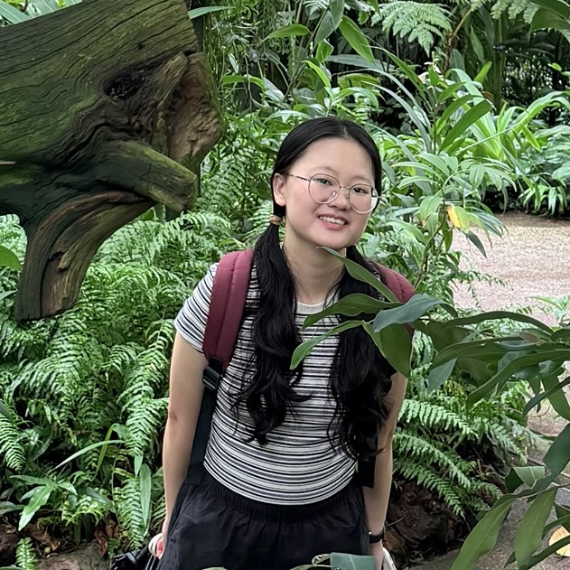

|
Wen Tao
I am currently a PhD student at Nanyang Technological University, advised by Prof. Alvin Chan. I received my master's degree in Computer Science and Technology from Hunan University, where I worked with Prof. Xiangxiang Zeng and Prof. Yuansheng Liu. Previously, I completed my bachelor's degree in Computer Science and Technology at China University of Mining and Technology.
Research: My current research interests focus on making large language models more trustworthy and creative for drug discovery.
Email /
Github /
Google Scholar
|

|
Education
-
August 2026 – Present
PhD in Computer Science,
Nanyang Technological University (NTU)
Supervisor:
Prof. Alvin Chan
-
September 2021 – June 2024,
GPA: 3.86/4.00,
Rank: 1/32
Master of Engineering in Computer Science and Technology,
Hunan University (HNU)
Supervisors:
Prof. Xiangxiang Zeng
and
Prof. Yuansheng Liu
-
September 2017 – June 2021,
GPA: 88.18/100
Bachelor of Engineering in Computer Science and Technology,
China University of Mining and Technology (CUMT)
|
|
Publications (Full publications: here)
|
|
Towards Understanding Modality Interaction in Multimodal Language Models via Partial Information Decomposition
Wanlong Fang, Tianle Zhang, Wen Tao, Alvin Chan
ICML 2026, 2026 [ Paper ]
|
|
How to Make Large Language Models Generate 100% Valid Molecules?
Wen Tao, Jing Tang, Alvin Chan, Bryan Hooi, Baolong Bi, Nanyun Peng, Yuansheng Liu, Yiwei Wang
EMNLP 2025 Main, 2025 [ Paper | Code ]
|
|
Towards Synergistic Path-based Explanations for Knowledge Graph Completion: Exploration and Evaluation
Tengfei Ma, Xiang Song, Wen Tao, Mufei Li, Jiani Zhang, Xiaoqin Pan, Yijun Wang, Bosheng Song, Xiangxiang Zeng
ICLR 2025, 2025 [ Paper | Code ]
|
|
Bridging chemical structure and conceptual knowledge enables accurate prediction of compound-protein interaction
Wen Tao, Xuan Lin, Yuansheng Liu, Li Zeng, Tengfei Ma, Ning Cheng, Jing Jiang, Xiangxiang Zeng, Sisi Yuan
BMC Biology, 2024 [ Paper | Code ]
|
|
Learning to Denoise Biomedical Knowledge Graph for Robust Molecular Interaction Prediction
Tengfei Ma, Yujie Chen, Wen Tao, Dashun Zheng, Xuan Lin, Patrick Cheong-Iao Pang, Yiping Liu, Yijun Wang, Longyue Wang, Bosheng Song, Xiangxiang Zeng, Philip S. Yu
IEEE Transactions on Knowledge and Data Engineering, 2024 [ Paper | Code ]
|
|
Prediction of multi-relational drug-gene interaction via Dynamic hyperGraph Contrastive Learning
Wen Tao, Yuansheng Liu, Xuan Lin, Bosheng Song, Xiangxiang Zeng
Briefings in Bioinformatics, 2023 [ Paper | Code ]
|
|
How Creative Are Large Language Models in Generating Molecules?
Wen Tao, Yiwei Wang, Peng Zhou, Bryan Hooi, Wanlong Fang, Tianle Zhang, Xiao Luo, Yuansheng Liu, Alvin Chan
arXiv, 2026 [ Paper ]
|
Awards
-
2026, Gold Reviewer Award (Top 25%), ICML 2026
-
2025, Outstanding Master’s Thesis Award (Sole recipient among master’s students at Hunan University), Hunan Association for Artificial Intelligence
-
2024, Outstanding Master’s Thesis (Top 3%), Hunan University
-
2024, Provincial-Level Outstanding Graduate (Top 1%), Hunan Provincial Department of Education
-
2024, University-Level Outstanding Graduate, Hunan University
-
2023, National Scholarship (Top 1%), Ministry of Education of the People’s Republic of China
-
2023, Hugo Shong Scholarship (Sole recipient among all departmental graduate students), Hunan University
-
2023, Excellent Graduate Student, Hunan University
-
2021–2023, First-Class Academic Scholarship, Hunan University
-
2021, Excellent Graduation Thesis (Top 2%), China University of Mining and Technology
-
2018–2020, College-Level Excellent Student, China University of Mining and Technology
-
2018, Second Prize, China College Students’ “Internet+” Innovation and Entrepreneurship Competition, China University of Mining and Technology
-
2018, Learning Star for Integrated English (Course Grade Ranking: 5/5348), China University of Mining and Technology
|
Students Mentored
-
Augustin Vassilli Alexandre Boris Bruck, Undergraduate Student, EPFL
-
Jing Xiao, Master’s Student, Hunan University
-
Robert Veres, Master’s Student, ETH Zürich
-
Yufei Ye, Master’s Student, Hunan University
|
|